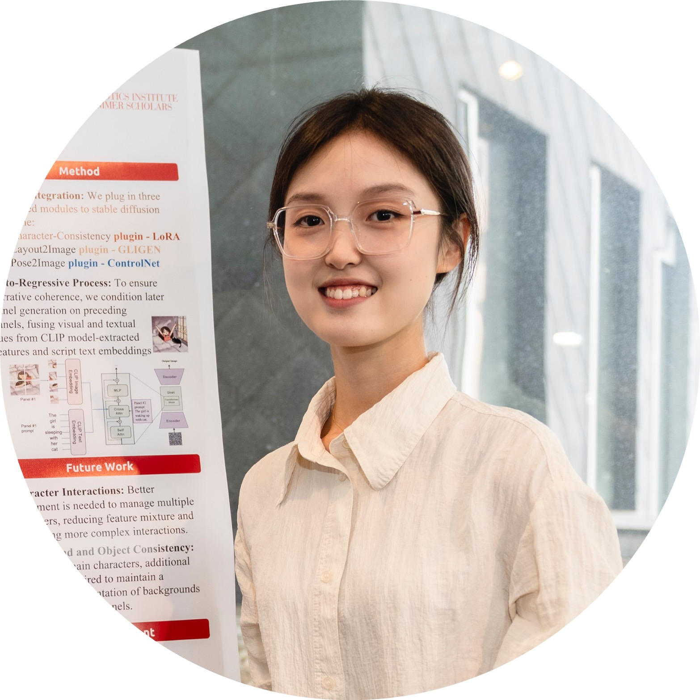
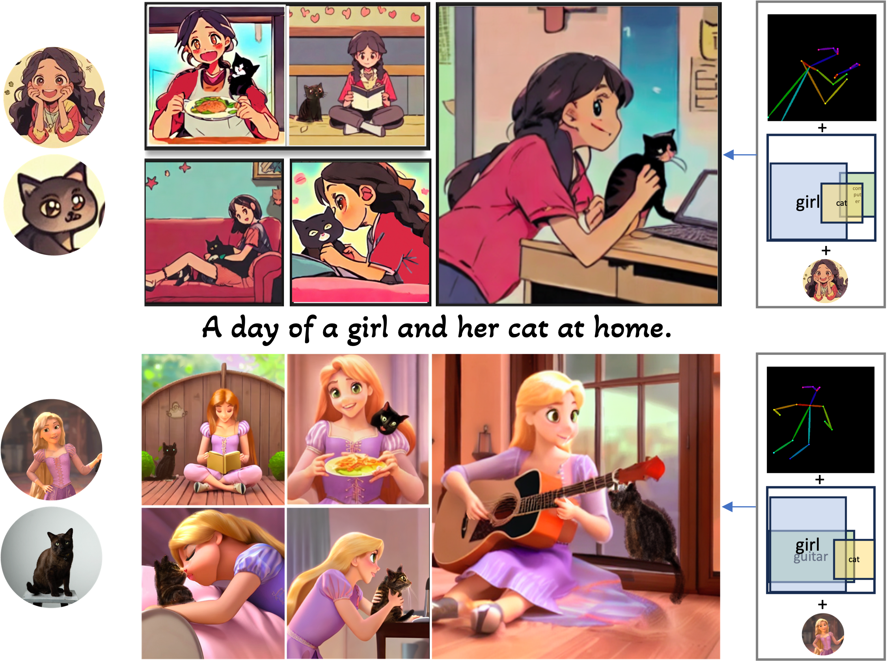
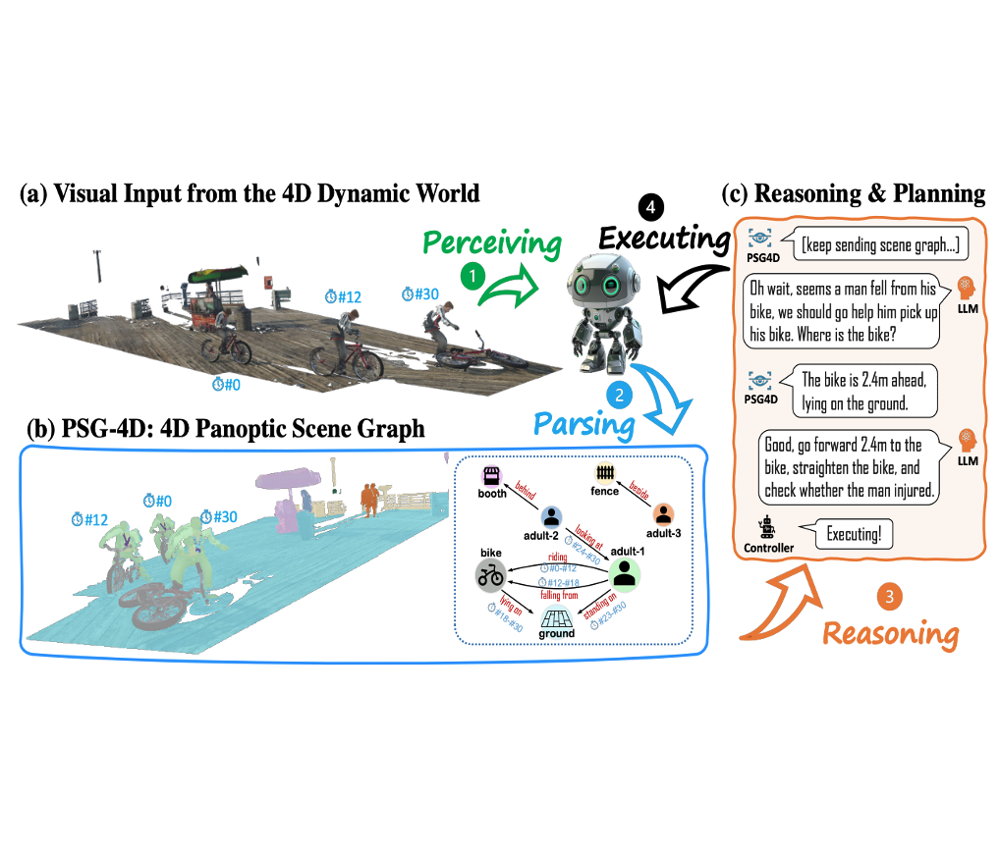
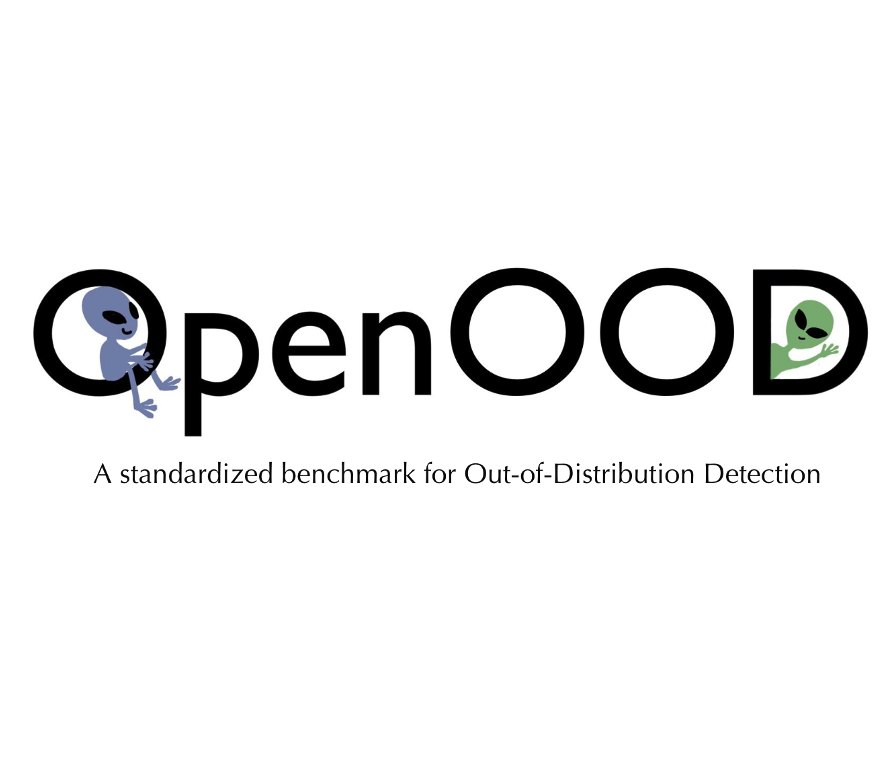
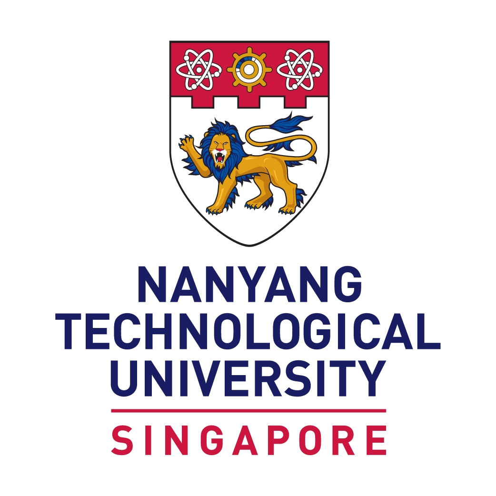
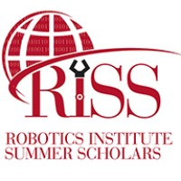
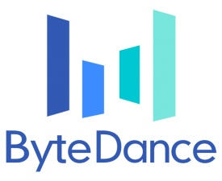

|
Wenxuan Peng I am a senior-year undergraduate student at Nanyang Technological University in Singapore, majoring in computer science. During my time at NTU, I've had the opportunity to dive into research at MMLab@NTU, guided by Prof. Ziwei Liu. Currently, I am a research intern in roBot Intelligence Group at Carnegie Mellon University, mentored by Prof. Jean Oh. |
 |
{kind=link}
ResearchMy research interests span the development and exploration of multi-modal generative models. I am currently engaged in developing highly controllable and compositional generative models that empower creative and interactive content creation and manipulation. Additionally, I am also invested in understanding and improving vision-language models to better grasp and respond to the complex interactions between visual data and language. I am looking for a Ph.D. position in 24 Fall! |
|

|
Personalized Comic Story Generation
Wenxuan Peng, Peter Schaldenbrand, Jean Oh, NeurIPS Workshop on Machine Learning for Creativity and Design, 2023 (Under camera ready) |

|
Panoptic Video Scene Graph Generation
Jingkang Yang, Wenxuan Peng, Xiangtai Li, Zujin Guo, Liangyu Chen, Bo Li, Zheng Ma, Kaiyang Zhou, Wayne Zhang, Chen Change Loy, Ziwei Liu, CVPR, 2023 paper |
|

|
4D Panoptic Scene Graph Generation
Jingkang Yang, Jun Cen, Wenxuan Peng, Shuai Liu, Fangzhou Hong, Xiangtai Li, Kaiyang Zhou, Qifeng Chen, Ziwei Liu, NeurIPS, 2023 (Spotlight, Under camera ready) |
|

|
OpenOOD: Benchmarking Generalized OOD Detection
Jingkang Yang, Pengyun Wang, Dejian Zou, Zitang Zhou, Kunyuan Ding, Wenxuan Peng, Haoqi Wang, Guangyao Chen, Bo Li, Yiyou Sun, Xuefeng Du, Kaiyang Zhou, Wayne Zhang, Dan Hendrycks, Yixuan Li, Ziwei Liu, NeurIPS, 2022 project page / arXiv / github |
Education |
|  |
Nanyang Technological University (NTU), Singapore
B.E. in Computer Science Aug. 2020 - May 2024 (Expected) |
 |
National University of Singapore (NUS), Singapore
SUSEP Exchange Programme Aug. 2021 - Dec. 2021 |
Experiences |
|  |
Carnegie Mellon University
Robotics Institute Summer Scholar May.2023 - Present Advisor: Prof. Jean Oh |
|  |
ByteDance, Singapore
Computer Vision Engineer May.2022 - Jul.2022 |
 |
MMLab, NTU
Undergraduate Researcher Aug.2021 - Present Advisor: Prof. Ziwei Liu |
Selected Awards and Honors |
|